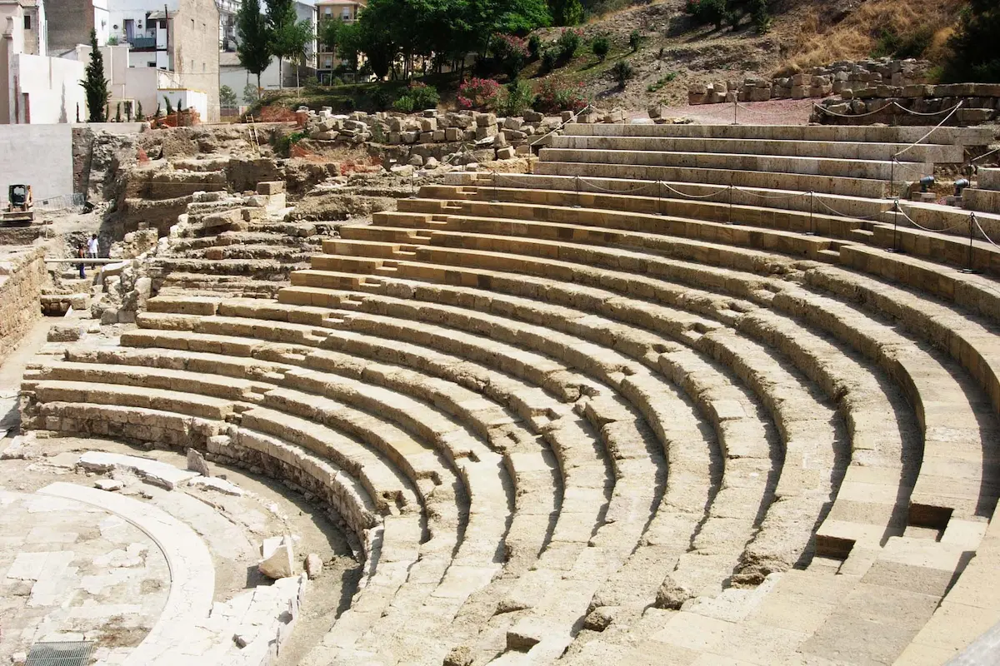
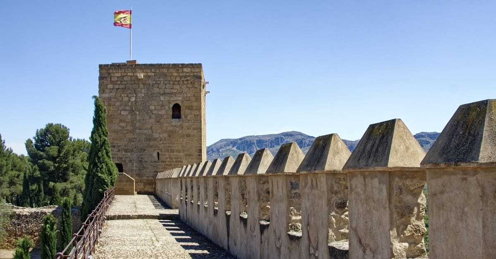
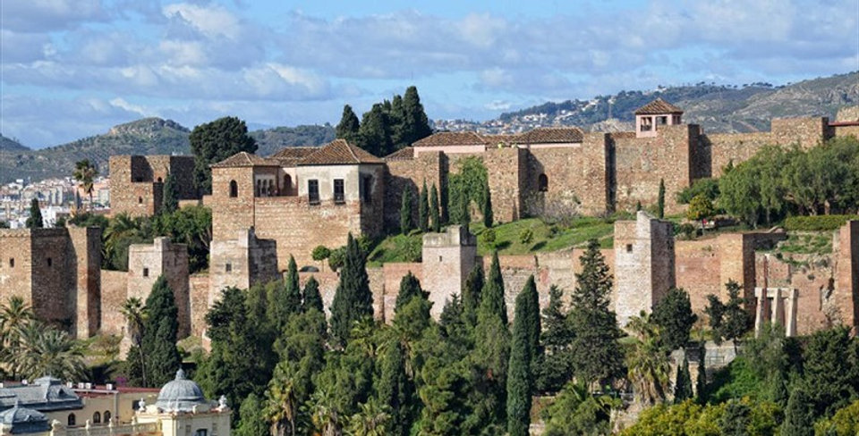
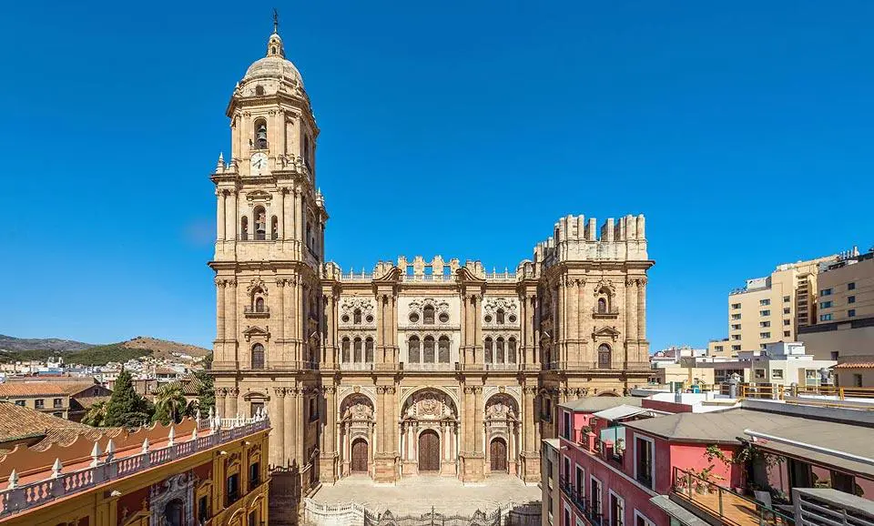
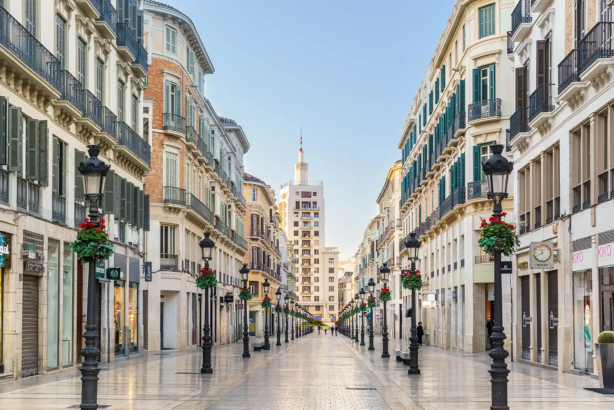
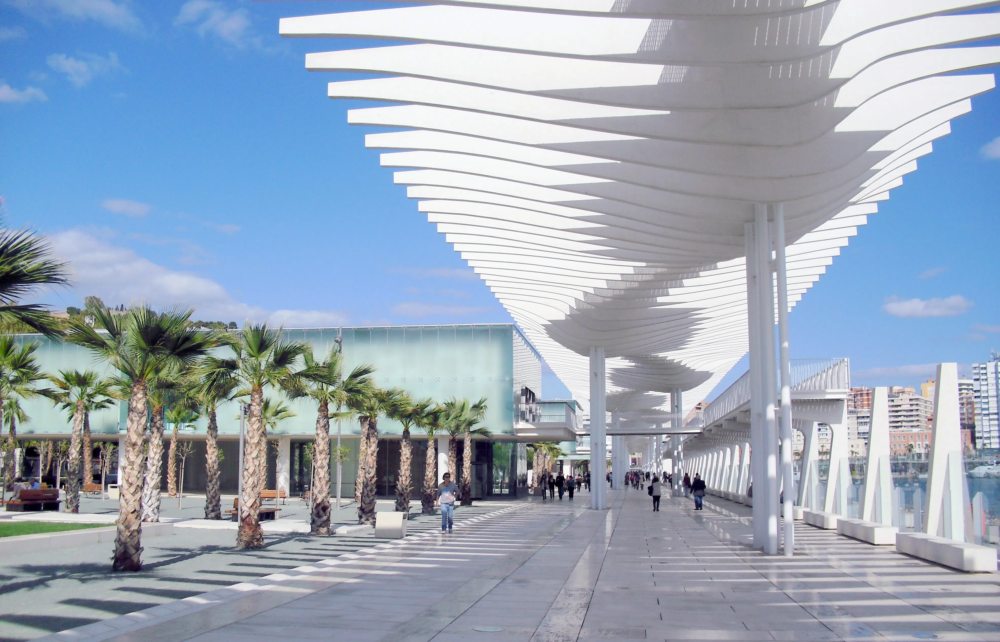

During the Roman era, Malaca became an important commercial hub in Hispania Baetica. Even though it was founded earlier by the Phoenicians, the city flourished under the Roman empire. Its economy was based on the production and export of garum (fish sauce), wine, and olive oil. Romans built key infrastructures such as roads, thermal baths, and the theatre that still stands today. Its strategic coastal position strengthened trade across the Mediterranean. The city also adopted Roman law, culture, and religion, blending them with older local traditions.
The Roman Period

The Muslim Period

The Muslim period in Málaga began in 711, when Islamic forces entered the Iberian Peninsula. Under the Umayyads and the Taifa kingdoms later, Mālaqa became a prosperous fortified port city. The Alcazaba and Gibralfaro Castle were built to protect the city and symbolize its importance. Mālaqa's economy flourished because of the trading, agriculture, and crafts — like ceramics and silk. It became a culturally diverse city influenced by Arabic, Berber, and local cultures. During the Nasrid Kingdom of Granada, Mālaqa served as a key coastal stronghold. The city fell in 1487 to the Catholic Monarchs.
The Christian Reconquer

The Christian Reconquest of Málaga culminated in 1487 during the christian rule of the Catholic Monarchs. Málaga, that was part of the Nasrid Kingdom of Granada, was a key coastal stronghold. The siege lasted several months, and both land and naval forces cut off the city’s supplies. Málaga surrendered in August 1487 after intense resistance. Its fall was a major blow to the Nasrid kingdom. In 5 years time, the Muslim empire in the Iberian Peninsula would end. The city underwent deep demographic and cultural changes as its Muslim population faced exile or slavery. Málaga was then incorporated into Castilian territory.
Malaga in the modern age

During the Modern Age (from the 16th to the 18th century), Málaga gradually transformed under Christian rule. The city’s population and economy were rebuilt, focusing on agriculture, wine production, and Mediterranean trade. Málaga became an important port for exporting raisins, olives, and local wines to Europe and the Americas. Religious orders and new institutions shaped urban life, adding churches, convents, and administrative buildings. However, the city also suffered setbacks such as epidemics, pirate attacks, and economic fluctuations. In the 18th century, Málaga began to recover again thanks to Bourbon reforms and improvements to its port. These changes laid the foundations for the significant growth Málaga would experience in the 19th century.
The 19th and 20th centuries in Malaga

In the 19th century, Málaga became one of Spain’s earliest industrial cities, with iron, textile, and wine industries being the most important ones. A new bourgeoisie emerged, led by families like the Larios. Its influence shaped urban development. For example, the creation of Calle Larios, promoted by the Marqués de Larios is nowadays the social and economic center of the city. Despite this growth, crises such as phylloxera and industrial decline weakened the city toward the end of the century. In 1881, Málaga saw the birth of Pablo Picasso, who would become one of the most influential artists of the 20th century. The 20th century brought political unstability, the Civil War, and a slow economic recovery. From the 1960s onward, tourism reshaped the local economy and transformed the coastline. By the century’s end, Málaga was evolving into a modern, service-based, and culturally vibrant city.
Malaga in the present day

Today, Málaga is one of the fastest-growing and most dynamic cities in southern Spain. It has transformed into a major cultural hub, home to museums such as the Picasso Museum, the Pompidou Centre, and the Carmen Thyssen Museum. Tourism plays a central role, supported by its beaches, historic center, and climate. The city has also become an emerging technology and innovation center, especially in the Málaga TechPark. Urban renewal projects have revitalized areas like the port (Muelle Uno) and the Soho district. Málaga’s economy now blends tourism, services, culture, and technology. As a result, it is considered one of the most attractive Mediterranean cities to live, work, and visit.